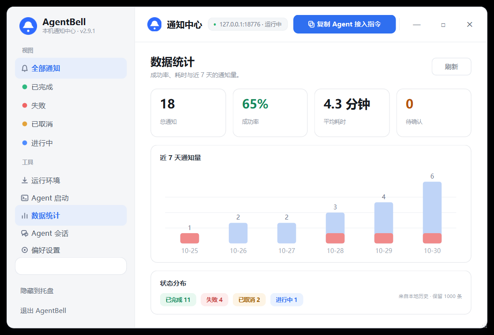
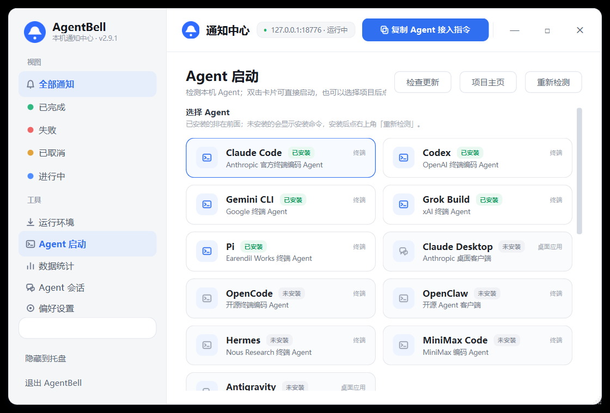
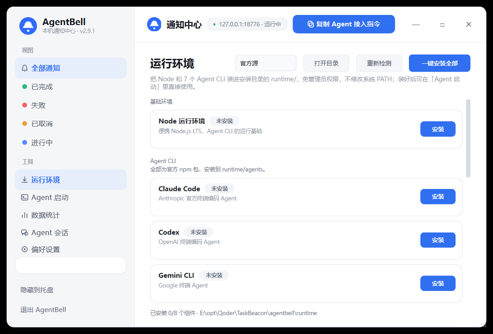
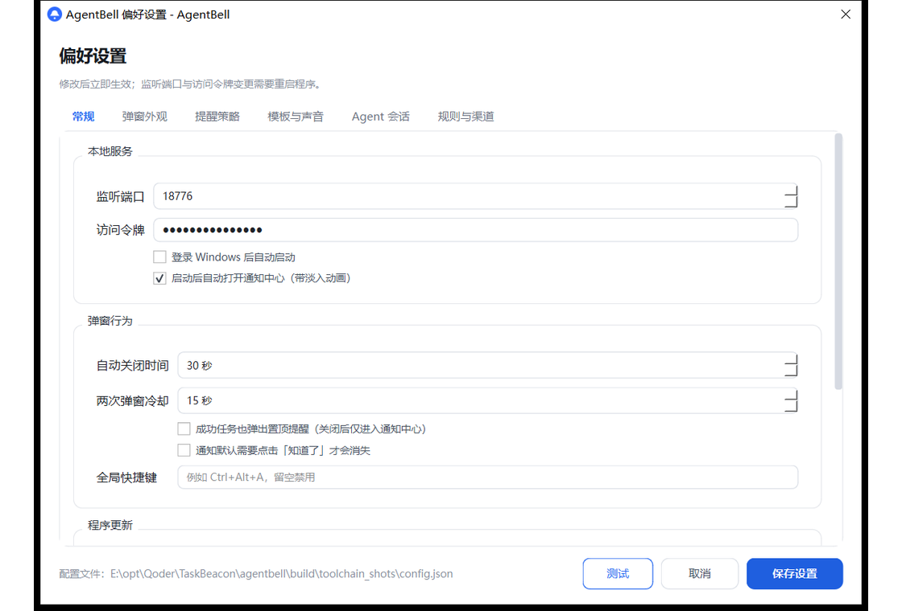

走开也没关系
任务交给 Agent，时间还给自己。只在每轮结束时提醒一次，过程不打扰。
本机通知中心 · WINDOWS DESKTOP
一个只做提醒的本地通知中心。Claude Code、Codex、Gemini CLI 跑完一轮，屏幕角落递上一张置顶卡片——不用切回终端，也不会错过最后一条结果。
v2.9.9免安装单文件 · 约 85 MB · 只监听 127.0.0.1

周报已生成
01 / 为什么
Agent 的工作发生在终端里，但等待不该占据你的注意力。AgentBell 把「跑完了」这一件事做好，其余时间保持安静。
任务交给 Agent，时间还给自己。只在每轮结束时提醒一次，过程不打扰。
免打扰时段、全屏与会议抑制、锁屏保留、成功仅入中心——铃声有分寸。
即使通知没带来源，也会按本机连接反查发送进程；卡片出现「回到终端」，把宿主窗口切到前台并落下键盘焦点。
02 / 能力
不做编排、不代理模型、不上传数据。只把通知、历史和回到现场做到顺手。
三种弹出模式、四套皮肤；全屏时按设定区域落位，不抢焦点。
状态、搜索与 Agent 来源叠加筛选；近期活跃会话自动汇入「进行中」，1000 条历史附 7 天趋势。
检测并启动 11 种 Agent，默认工作区是安装目录下的 chat/。
一键装好 Node LTS 与 7 个官方 Agent CLI，不写系统 PATH。
自动识别发送进程，沿父进程链定位宿主窗口并确保键盘焦点真正落下，不执行命令。
HTTP 只绑 127.0.0.1，历史落在本机 SQLite，无账号、无遥测。
03 / 界面
状态、Agent 来源与搜索叠加筛选；活跃会话自动汇入「进行中」，回到终端就在卡片上。

完成率、平均耗时与 7 天趋势，数据来自本机历史。

11 种 Agent 的检测、项目选择与一键启动。

Node、7 个 CLI 与工具状态，一页装好、随时卸载。

外观、打扰策略、自更新、规则与外部渠道。
截图使用独立调试端口 18776；默认端口为 127.0.0.1:8765。
04 / 更新
从筛选、来源识别到「进行中」，最近几个版本把最常见的打断补上了。
扫描结果里最近两个周期内仍有写入的会话，会以只读卡片出现在「进行中」，标注 Agent、项目、最近活动与记录数；随来源筛选与搜索收窄，不计入「全部」。
来源 Agent 移到标题行，通知中心新增来源下拉，可与状态、搜索叠加；安装包预填更新仓库，启动约 9 秒自动检查新版本。
Windows 前台锁拒绝普通置前时，依次尝试附加输入队列与 SwitchToThisWindow，仍失败才提示；只在用户点击后触发。
切换状态筛选不再卡住约 10 秒；通知没填 origin 或 source 时，按本机连接反查发送进程并补出来源。
05 / 上手
把 AgentBell.exe 放进任意可写目录，双击运行；SmartScreen 提示时选择「更多信息 → 仍要运行」。
打开同目录的 config.json，填写 token；留空则关闭鉴权，只建议在本机使用。
一轮结束时 POST 一次；工具栏的「复制 Agent 接入指令」可把说明直接交给 Agent。
curl -X POST http://127.0.0.1:8765/notify \
-H "Content-Type: application/json; charset=utf-8" \
-H "X-Token: your-token" \
-d '{
"title": "周报已生成",
"status": "succeeded",
"summary": "12 页 · 8m30s",
"source": "Claude Code",
"origin": {"pid": 12345}
}'Agent 也可以发送 origin.pid 等字段，换来回终端按钮。
06 / 运行环境
普通用户不用自己准备 Node。在「运行环境」页点一次，官方 Node LTS 与 7 个 Agent CLI 就装进安装目录的 runtime/。
免管理员权限 · 不改系统 PATH · 支持单个卸载与重新检测
runtime/
├─ node/ 官方 LTS 便携包
├─ agents/ 7 个官方 CLI
├─ cache/ npm 缓存
├─ npmrc 隔离的 npm 配置
└─ tools.json 版本与校验记录07 / 边界
没有账号、没有遥测、没有统计上报。
HTTP 只绑定回环地址，不暴露到局域网。
通知与统计留在本机，默认 1000 条，可随时清除。
08 / 问答
检测与启动覆盖 Claude Code、Claude Desktop、Codex、Gemini CLI、Grok Build、OpenCode、OpenClaw、Hermes、Pi、MiniMax Code 与 Antigravity。运行环境只代装其中 7 个官方 npm CLI。
不需要。Node 与 CLI 都装在安装目录的 runtime/ 下，不写系统全局目录，也不修改系统 PATH。
不会。HTTP 服务只监听 127.0.0.1，历史存在本机 SQLite；没有账号、云同步或遥测。
弹窗、通知中心与 HTTP 服务可以从源码运行；托盘、全局热键、全屏/会议检测、回到终端与便携 Node 是 Windows 专属。运行环境目前只支持 Windows。
安装包已预填更新仓库 1wu-davy-2/AgentBell，启动约 9 秒自动检查，托盘与设置页也可手动检查；更新包只从 GitHub HTTPS 下载，校验大小与 SHA-256，退出时替换、备份并重启。源码模式只下载安装包，不替换正在运行的 Python 进程。
会话扫描发现最近两个扫描周期（默认 240 秒）内仍有写入的会话，就会以只读卡片出现在「进行中」，方便知道哪些 Agent 还在跑。它不写入历史、不计入「全部」，扫描关闭时自动隐藏。
AgentBell 刻意做成原生 PySide6 窗口：更贴近桌面、更低打扰，也不需要你常驻一个浏览器标签页。